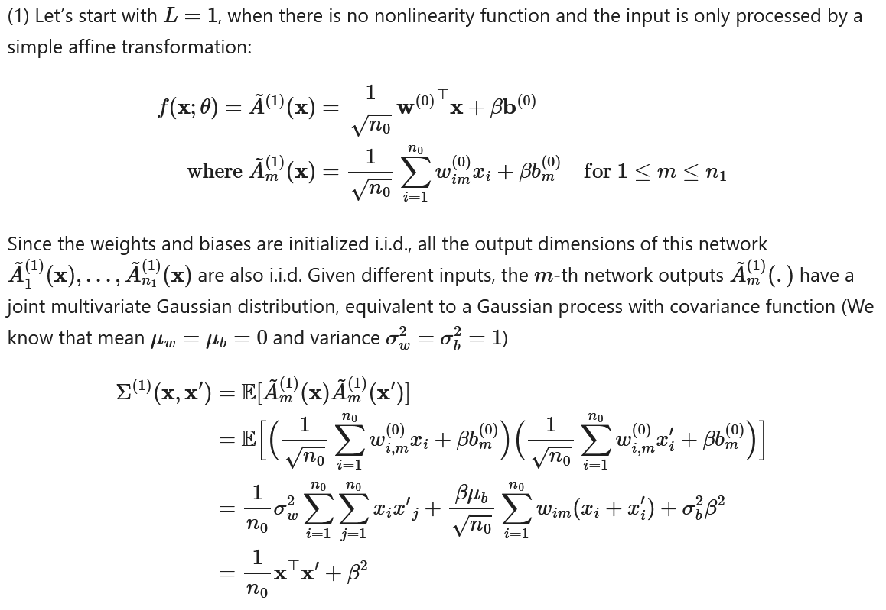
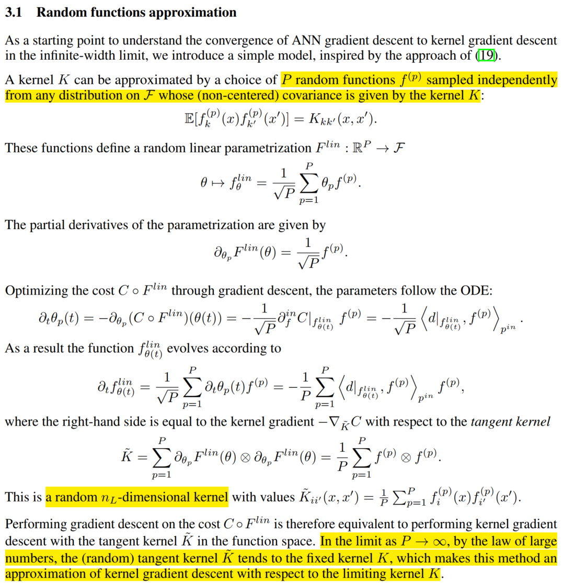
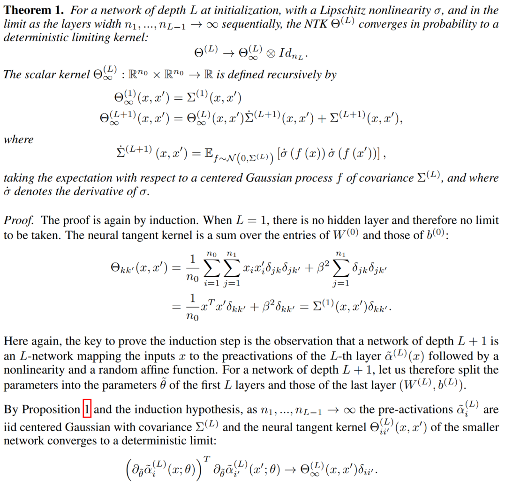
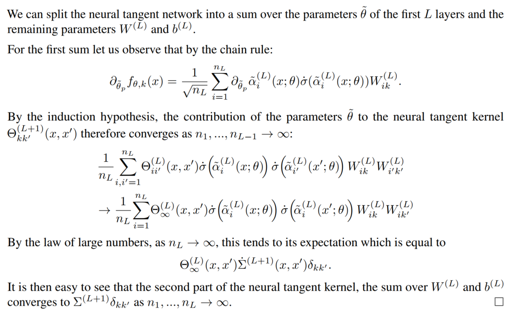
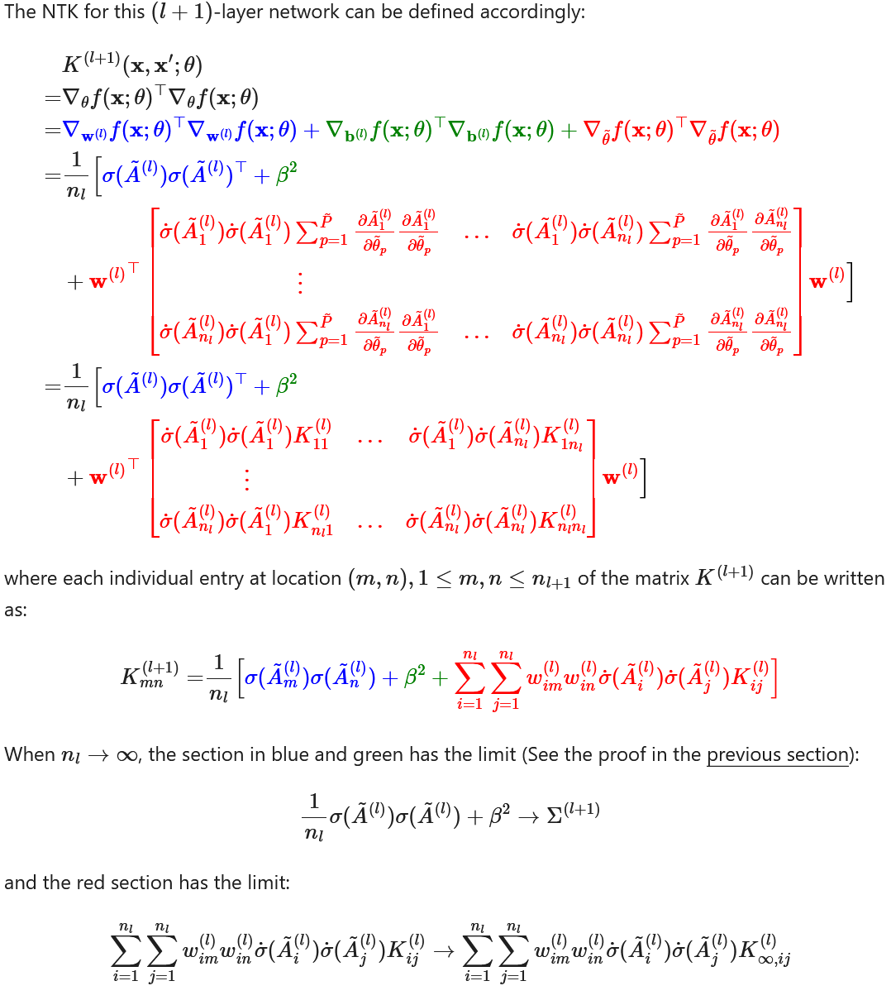
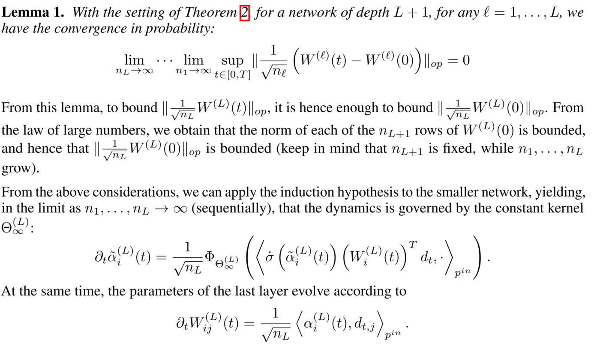
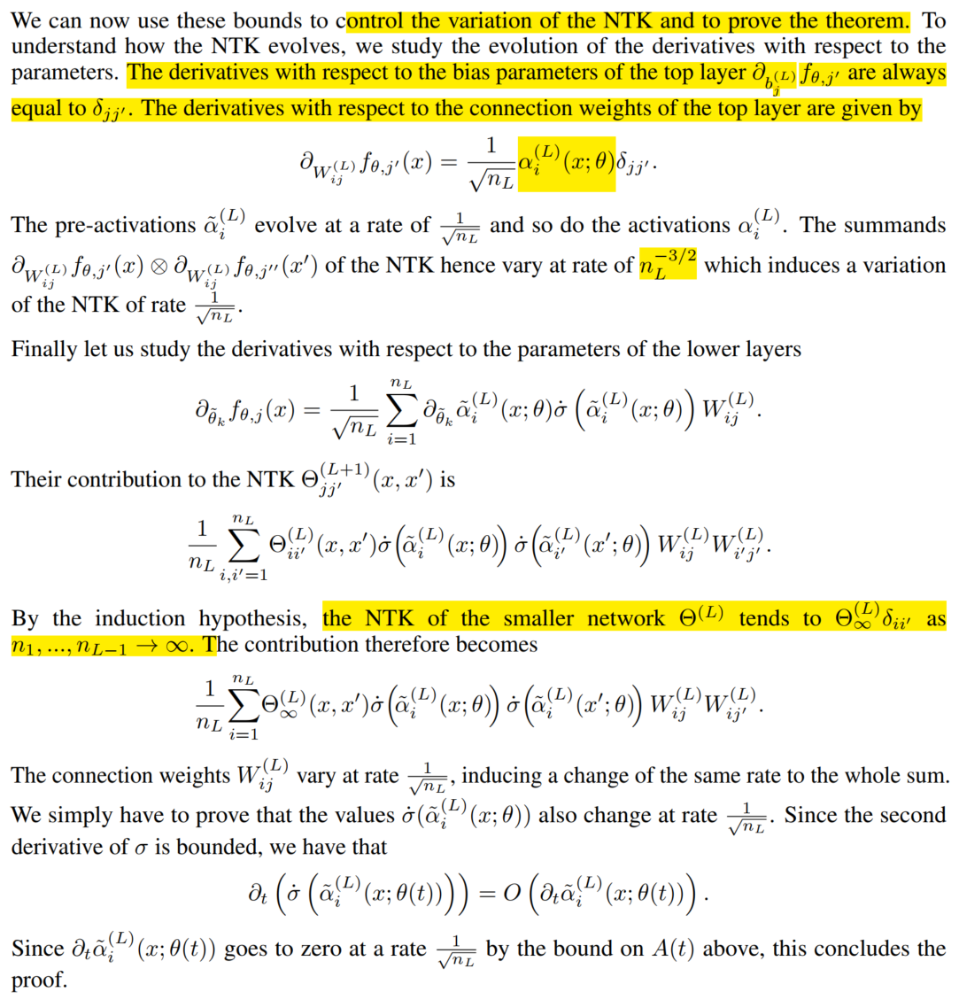

理解Kernel Trick、Gaussian Process以及Neural Tangent Kernel
Table of Contents
最近在阅读一些对神经网络进行理论分析的工作，这些工作常常会用到NTK（Neural Tangent Kernel）等的工具，因此笔者在学习时写下了这篇文字。这篇文章将会刻意省略一些众所周知的内容，同时对核方法以及NTK的原理给出较为深入的理解和解释，并加入近期的一些在LLM上的发现。
1. Kernel Method
1.1. Motivation for proposing Kernel Methods
核函数与核方法的介绍在ML领域主要同早期的SVM等技术结合起来。该类方法的提出旨在解决“非线性可分的机器学习问题”，也就是通过线性空间的仿射变换以及通过特征值筛选等方式在理论上无法良好解决的复杂问题。很多书籍与文章里常见的“大环套小环”的分类或者对“异或”问题的分类都属于这种线性不可分的问题。
当两类数据节点在线性空间中不可分时，一种普遍承认的解决思路是“在线性变换当中添加 非线性模块 ”，比如神经网络中的激活函数等。核函数本质上就是在SVM等模型中所添加的非线性函数部分，以此让模型拥有处理非线性可分的数据的能力。不同的是，往线性变化里加入核函数可以用另外一套听起来更美妙的故事在一套新的故事下得到理解。
1.2. 核方法的核心思路：基于当前的线性无关组通过非线性组合构建一组维度更高的“基”以使得在过去线性无关组上无法线性可分的数据在新的基上存在线性可分的可能
我尝试用一句话总结什么是核方法，并把它写在了本小节的标题里。
一些线性代数的解释：线性无关组是线性代数的基本概念，大概说的是一组维度相同的向量，其中任意一个向量都无法用剩余的向量线性表达。线性无关组规定了这些向量在方向上的独立性，同时没有严格约束这些向量必须是彼此正交的。同时，线性无关组没有对组里每个向量的维度进行规定。 基同样是线性代数的一个基本概念，它是指对于当前线性空间而言行列均满秩的一个极大线性无关组。换句话说，该线性空间中任一向量都可用该基进行表示。基同样没有对正交性、范数为1等属性进行要求。
核方法的思路仍然是沿袭了线性变换做分类的思路：过去我是对数据在当前线性空间所变换后的空间里计算数据之间的相似性，并试图最小化相同类别数据之前的距离。如今既然这些数据被证实无法在这一维度的空间里被有效区分，那为什么不构建更高维的线性空间，然后继续做划分呢？ 基于当前的线性空间构建更高维度的新的线性空间并非不可能，我们只需要把不同的维度进行非线性组合就好了。
我们把这个函数，把这个可以把一个低维的向量$x$映射成高维空间的一个新向量 \(\hat{x}\) 的函数记为\(\phi(x)\)，并期望通过映射后的向量的相似度作为度量进行分类的训练。近似于cosine的内积较常在这一过程中使用，即既然 \(x_{1}\cdot x_{2}\) 不好用，那便使用\(\phi(x_{1})\cdot \phi(x_{2})\)，也就是\(\hat{x_{1}}\cdot\hat{x_{2}}\).
现在你已经完全理解了核方法的主要思路。然后新的问题产生了：世界上的非线性组合很多，我需要通过什么样的非线性组合去达成映射到高维空间这个目标呢？又或者——我需要多少维的高维空间才能实现线性可分呢？
实际上，我们可以通过这两个问题一窥核函数的优势及其局限性。先关注第二个问题，令人惊讶的是：实际上我们可以把一个有限维度的线性空间通过非线性映射映射到一个无穷大维度的新空间上，并计算在这个无穷维的空间里两个点的点积。这个方法被叫做kernel trick。我会先介绍它的一般思路，然后在后续解答第一个问题时论述为什么这是可行的以及核技巧的局限性。
1.3. 核技巧（Kernel Trick）：在新基上的线性操作（尤其是点积）可以借助核函数直接在原空间中计算
kernel trick既然是一个trick，其实就是说的一个取巧的东西。它的core idea其实就是题目中所说的：对于原空间的俩点：\(x_{1}\)，\(x_2\)，我通过一个相似度函数 \(k(x_{1},x_{2})\) 所计算的结果就可以认为是这两个点在通过一个未知的非线性映射 \(\phi(x)\) 映射到高维空间后所计算的内积 \(\phi(x_{1})\cdot\phi(x_{2})\) . 换句话说：我不需要求取 \(x_{1}\) 在映射到高维空间之后的新向量 \(\hat{x}_{1}\)，我甚至不需要显式地定义一个非线性映射的函数 \(\phi(x)\)，我只需要找到一个非线性的度量函数 \(k(x_{1},x_{2}):\mathbb{R}^{d}\times\mathbb{R}^{d}\rightarrow R\) 并且保证这个函数k在某种程度上满足了“其所获得的值确实对应于某非线性升维映射的空间里的两个自变量的点积”就够了。
这就是核技巧。其中这个函数 \(k(x_{1},x_{2})\) 就是所谓的kernel function。
现在你已经理解了一半的kernel function和kernel trick，另一半是为什么kernel trick是有效的，以及如何判断一个非线性度量函数是否是核函数，即核函数的基本属性和定义。
Mercer定理可以看作是对核函数的一个定义。
对于任意的非零函数 \(g(x): \mathbb{R}^{d}\rightarrow \mathbb{R}\)，如果以下公式成立：
\begin{equation} \int\int{g(x_{1})k(x_{1},x_{2})g(x_{2})dx_{1}dx_{2}}\rangle 0 \end{equation}那么我们说$k(x_{1},x_{2})$是一个核函数。
笔者也没特别理解清楚这一半，因为显然这个公式中的 $g(x)$带有线代中合同（congruence）的思想。而我们知道，合同的思想又是同矩阵的二次型以及特征值紧密关联的。此处暂不展开，一个简短的分析如下：
倘若我们认为函数 \(k\) 在计算 $x_{1}$和 $x_{2}$时会通过 $n_{k}$未知的函数 \(\phi_{k}(x_{1}^{i},x_{2}^{j}):\mathbb{R}\times\mathbb{R}\rightarrow\mathbb{R}\) 先构建一个维度为 \(n_{k}\times n_{k}\) 的矩阵\(K\)，其中，其中$x_{1}^{j}$是$x_{1}$的第$i$个元素，那么，我们知道核函数真正做的事情是对 \(K\) 的对角线上的元素进行加和。简短来说就是：两个向量的内积就是两个向量的cronecker乘积的迹。从这个视角看，公式1似乎在谈论矩阵 \(K\) 的正定性，也就是说 \(g^{T}\cdot K\cdot g\rangle 0\) . 也就是说，矩阵K必须是半正定的。也就是说，矩阵K的特征值的模必须大于等于0 （？）。
从这个视角来看，Mercer定理似乎是在说：在我们使用kernel trick时，假设\(k(x_{1},x_{2})\) 代表了非线性映射$φ$所对应的新空间上的内积，也就是\(\phi(x_{1})\cdot\phi(x_{2})=\sum_{i=1}^{N_{\phi}}{\lambda_{i}\phi_{i}(x_{1})\phi_{i}(x_{2})}\)，那么我们希望此处的\(\lambda_{i}\),也就是这个特征值，必须是大于等于0的。更进一步地说： Mercer定理强调核函数必须能够使得映射后的空间上的元素积在方向上保持不变，以此使得这种内积可以作为一种类似于距离的度量使用。
特殊地，如果我们让\(x_{1}=x_{2}\)， 那么Mercer定理在表达\(\sum_{m}{K_{m,m}x_{1}^{m}\cdot x_{1}^{m}}\rangle 0\)，即“非负性”这样一条最基本的性质。
1.4. 几种常见的Kernel Function
此处介绍四种常见的核函数，这一部分不是本文的重点。
1.4.1. Linear Kernel
1.4.2. Polynomial Kernel
1.4.3. Guassian Radial Basis Function, RBF Kernel
1.4.4. Laplace Kernel
1.4.5. Obvervations
- 他们似乎都是根据相关分布的概率分布函数得来的。如高斯分布、拉普拉斯分布等。
- 可以看到多是一些连续可导的非线性操作，比较光滑。
- 不总是无穷维的。如多项式的升维（非超越性？）。线性核甚至没有升维。
2. Gaussian Process
现在你已经对核函数拥有了一定的理解，下一步是去理解“高斯过程”。为什么要去理解高斯过程？因为高斯过程是一种非常经典且抽象的、学习模型高度抽象的对机器学习的建模方式。在本章节的最后，你甚至会意识到神经网络也是一种特殊的高斯过程。
2.1. 方差、协方差：使用核函数定义的协方差
一般而言，统计学上的方差可以定义为： \(\sigma^2=\sum_i {x_i-\mu}^2\).
对于随机变量X和Y，协方差可以定义为 \(Cov(x,y)=\sum_i (x_i-\mu_x)(y_i-\mu_y)\).
可以看出， 方差衡量了一个随机变量在线性空间中偏离其均值的程度 。
也可以看出， 协方差反映了两个随机变量的线性相关程度 。即当一个随机变量的值超过其期望值时，若另一个也超出，则二者正相关，表现出一个较大的正值。反之则是一个较大的负值。若其中一个随机变量的变化不会伴随着另一个随机变量的变化，则协方差的数值为0.
特殊地，这种相关程度本质上其实是“无界”的，这代表如果不同的随机变量之间其量纲是不同质的，则随机变量两两之间的对比或许会失去意义。比如一个极端的例子：一个随机变量和它自己的协方差——也就方差，理应反应这个随机变量与自身的相关程度。而我们知道，其相关程度永远为1，但却可以对应不同数值的方差。
当我们理解了协方差所代表的随机变量之间的相关程度这个解释，我们就可以不在拘泥于使用标量的乘积（即 \(Cov(x,y)=\sum_i (x_i-\mu_x)(y_i-\mu_y)\) ），当扩展到多维空间时，我们也不再需要拘泥于使用对应的内积。相反地，我们可以开始使用 核函数 来模拟两个随机变量在高维空间中所存在的点积，以此捕捉随机变量之间可能存在的更复杂的相关性，即 \(Cov(x,y)=k(x,y)\) ，其中x和y均为向量。
现在你应该理解了方差和协方差，同时知道我们在计算一组随机变量的协方差矩阵时甚至可以用核函数进行。
2.2. 高斯过程
现在我们可以开始思考高斯过程了。让我们代入一个最常见的机器学习场景：给定一批训练数据 \(X={x_1, x_2, ..., X_n}\) 以及这批训练数据的标签 \(Y={y_1, y_2, ..., y_n}\)。此处 \(x_i\) 和 \(y_i\) 都可以理解为输入空间和输出空间中的两个点。 现在给定一条测试集中的数据 \(x'\)，问: 这条数据所对应的标签应当是什么？
神经网络对这个过程的理解是：我们通过训练数据拟合了一个从输入空间到标签空间的一个复杂的映射，然后在推理时我们通过所拟合的函数来获得对应数据的标签数值。这个理解是相当自然且简洁的，没有任何问题。唯一的缺陷是：我们对这个所拟合出来的映射所具有的性质一无所知，或者说，我们其实对我们所学到的东西一无所知。
高斯过程则是采用分布的方式去理解.官方的思路是: 首先，我们假设这批训练数据的标签 \(Y\) 与所提供的测试数据 \(y'\) 其联合分布是一个 多维高斯分布, 而该分布的协方差矩阵可以通过训练数据 \(X\) 与测试数据 \(x'\) 的协方差来定义. 通过这种方式, 我们可以构造一个如下所示的多维高斯分布:
当然！在高斯过程回归中，预测值的均值 \( \mu_* \) 之所以采用这个形式，源自于多维高斯分布的条件分布性质。让我们一步步分析这个推导过程。
首先，我们假设训练数据 \( X = \{x_1, x_2, \dots, x_n\} \) 对应的标签 \( Y = \{y_1, y_2, \dots, y_n\} \) 与新数据点 \( x_* \) 的标签 \( y_* \) 服从联合高斯分布：
\begin{equation} \begin{pmatrix} Y \\ y_* \end{pmatrix} \sim \mathcal{N}\left(0, \begin{pmatrix} K(X, X) & K(X, x_*) \\ K(x_*, X) & K(x_*, x_*) \end{pmatrix}\right) \end{equation}其中： - \( K(X, X) \) 是 \( n \times n \) 的协方差矩阵，描述了训练数据之间的协方差。
- \( K(X, x_*) \) 是 \( n \times 1 \) 的向量，描述了训练数据和新数据点之间的协方差。
\( K(x_*, x_*) \) 是一个标量，表示新数据点自身的协方差。
由于训练数据是已知的,所以我们所进行的推理可以看作是一个条件概率: 即在训练数据已知的前提下求取测试数据的分布情况. 换而言之, 我们需要计算 \( y_* \) 在给定训练数据 \( X \) 和 \( Y \) 的条件下的分布，即条件分布 \( y_* | X, Y, x_* \)。根据多元高斯分布的性质，条件分布仍然是高斯分布，其均值和方差如下：
*条件均值*：
\begin{equation} \mu_* = \mathbb{E}[y_* | X, Y, x_*] = K(x_*, X)^\top K(X, X)^{-1} Y \end{equation}*条件方差*：
\begin{equation} \sigma_*^2 = \text{Var}(y_* | X, Y, x_*) = K(x_*, x_*) - K(x_*, X)^\top K(X, X)^{-1} K(X, x_*) \end{equation}
这里条件均值的推导关键是利用了多元高斯分布的性质。具体地，对于任意两个随机向量 \( A \) 和 \( B \) 服从联合高斯分布：
\begin{equation} \begin{pmatrix} A \\ B \end{pmatrix} \sim \mathcal{N}\left(\begin{pmatrix} \mu_A \\ \mu_B \end{pmatrix}, \begin{pmatrix} \Sigma_{AA} & \Sigma_{AB} \\ \Sigma_{BA} & \Sigma_{BB} \end{pmatrix}\right) \end{equation}则 \( B \) 在给定 \( A \) 条件下的条件分布为： \[ B | A \sim \mathcal{N}(\mu_B + \Sigma_{BA} \Sigma_{AA}^{-1}(A - \mu_A), \Sigma_{BB} - \Sigma_{BA} \Sigma_{AA}^{-1} \Sigma_{AB}) \]
以上是比较官方的一种理解高斯过程的方法. 另外一种思路则是通过输入数据的特征入手. 具体地,对于训练数据 \(X\) 和测试数据\(x_{*}\) , 我们可以通过协方差矩阵来刻画他们二者之间的相关关系, 总体上看我们可以认为他们符合一个多维高斯分布, 其中均值为 \(K(x_{*}, X)^{T}\cdot K(X,X)^{-1}\), 其中\(K(x_{*},X)\) 代表了测试数据与训练数据的相似度(相关程度), 而$K(X,X)^{-1}$则代表了训练数据自身与自身的相关性的导数, 可以理解为是对前一项的一个归一化. 通过这种方式, 我们实际上所获得的结果其实是测试数据与训练数据的相似度所构成的向量,换而言之,该向量的每一个元素表达了该条测试数据以多大的置信度相似于某一条训练数据. 将这一项与训练数据的标签 \(Y\) 做内积,实际上就是以该相似度作为权重系数对训练数据的标签进行了线性组合, 以获得了最终的测试数据所对应的标签的数学期望.
那么, 这种估测在何种程度上是靠谱的呢? 所呈现的实际上的条件概率分布又在何种程度上偏离了我们刚刚所获得的数学期望呢? 这个问题涉及到对测试数据的方差的研究. 值得注意的是, 前面为了方便理解, 我们有意无意地把 \(x_{*}\) 描述为单个的一条测试集中的样本. 实际上, 高斯分布所思考的必然不是孤立的点的行为. 此处包括以后的分析本质上其实对单个的测试集样本或者把 \(x_{*}\) 理解为如同 \(X\) 那般的所观测的一组测试集数据都成立.
同样根据高斯分布的性质,我们把条件分布 \(x_{*}|X\) 所获得的方差记为 \(K(x_{*}, x_{*})-K(X, x_{*})^{T}K(X,X)^{-1}K(X, X_{*})\) . 我们可以很明显地意识到这其实是分布\(x_{*}\) 的方差与该条件概率所对应的协方差的一个差值. 最基本的, 我们清楚方差(或者说协方差矩阵)总是大于等于零的(半正定的), 因为它本质上描述的是一个类似于长度的带有物理意义的东西. 所以, 直观上理解该方差, 可以说: \(K(x_{*}, x_{*})\) 代表了测试数据自身的方差(或者说协方差矩阵), 这是一个在没有引入额外信息的前提下的纯粹根据测试数据自身所得到的经验. 相对应的,后面的二次型\(K(X, x_{*})^{T}K(X,X)^{-1}K(X, X_{*})\) 则通过引入训练数据降低了这种估测的不确定性. 具体地说, 我们通过计算测试集数据与训练集数据的相似性(通过核函数来衡量)间接地得到了测试集数据与训练集数据相关性的方差(该二次型对角线上的元素)与测试集中不同数据与训练集的数据的相关性之间的相关性(协方差矩阵中的非对角线元素,即协方差), 因此, 该二次型实际上表达了如下的物理含义: 测试集数据与训练集数据之间的相关性究竟是弱的(协方差矩阵中的元素较小)还是强的(较大), 如果该相关性是强的, 那么我就可以以更大的自信通过已知的condition \(X\) 降低测试集数据的不确定性 (即减掉一个大的数值), 反之则反之. 二次型的中间项 \(K(X,X)^{-1}\) 同样起到了在估测测试集标签的数学期望中所起到的相同的作用:它通过合同变换里的特征值(大于等于0的特征值)隐晦地对测试集数据与训练集数据之间的相关性所构造的协方差矩阵进行了 归一化 , 即它使得通过引入训练数据的分布以降低不确定性的过程里充分考虑了训练数据的不确定性本身. 具体地, 如果训练数据集的数据彼此之间十分相似(协方差矩阵三角元素相对于对角线元素较大),那么说明训练数据所对应的是一个方差比较小的分布, 该分布的逆矩阵的特征值将会非常大, 意味着该二次型会以更大的自信去降低不确定性; 反之,对于从某一分布中采样所得到的训练数据, 倘若他们彼此之间较为分散, 则说明该分布其实是一个较为松散宽阔(方差较大)的分布, 这样的分布的逆矩阵会提供更低的权重系数应用在二次型的内积过程中, 也就代表所能够通过训练数据消除的不确定性其实十分可怜.
通过以上分析或许我们已经理解了一部分的高斯过程.
但是, 我们可以发现, 其实高斯过程的思考路径和过往我们对神经网络所对应的学习一个拟合过程的理解其实是格格不入的. 首先, 在以上分析中, 我们可以惊讶地发现: 模型所学习的映射的输出, 也就是\(y\), 竟然对预测的不确定性毫无影响! 考虑一个极端的例子: 一个恶意的攻击者替换掉了训练数据集中所有的训练样本所对应的标签值, 然后我们仍然傻傻使用这个训练集通过高斯过程或者神经网络或者其他机器学习方法构建了一个模型. 当我们在一个测试集上使用该模型进行推理时, 高斯过程告诉我们: 1) 由于训练集标签的修改,我们固然知道我们的预测结果的数学期望将会是这群修改之后的标签的一个加权的投票结果-—它确确实实远远偏离了正确的预测期望, 但是 2) 我们对有多大把握保证所预测的结果是正确的 (即概率论与数理统计中的 置信度 )这个事情其实和过去完全没有区别. 换句话说: 高斯过程试图表达: 机器学习不是在输入数据空间与输出空间之间学习去搭建一个桥梁这么简单, 高斯过程试图说明: 输入数据的地位天生地就是同输出数据的地位不对等的, 当我们充分相信我们的核函数的时候, 我们仅仅通过输入数据就可以影响从训练到推理这样一个条件分布(贝叶斯)的所有关键参数,而输出的标签仅仅会对该分布的数学期望产生一个简单的线性映射,而不会对其不确定性产生任何影响.
上述思考其实有点反直觉, 在下一小节将会讨论上述结果所存在的细微的问题是什么, 并分析为什么一个神经网络可以被看作是一个高斯过程.
2.3. Neural Network Guassian Process (NNGP) 基于中心极限定理推导得到"无限宽神经网络等同于高斯过程"
参考论文: Deep Neural Networks as Gaussian Processes (ICLR'18)
地址: https://arxiv.org/abs/1711.00165
这篇论文的结论是: 对于一个L层的神经网络(每层表示为 \(f_{i}^{l}(x;\theta)\), 该结果是在激活函数之前. 其中$i$是输出的第i个维度,每层的特征维度为 \(n_{l}\)), 当参数 $θ$所产生的维度(即神经网络的hidden state的维度,或者说权重矩阵与bias向量的输入输出的维度)趋向无穷大时, 该神经网络的输出都服从于一个均值为0方差可表示的多维高斯过程.
为方便公式, 假设模型参数服从标准正态分布, 这个高斯过程的方差可以通过训练数据与测试数据之间的相关性以及一个核函数来表示,具体为一个递推公式:
\begin{equation} \Sigma^{1}(X, X')=\frac{1}{n_{0}}X^{T}X'+\beta^{2}\\ \lambda^{(l+1)}(\mathbf{x}, \mathbf{x}') = \begin{bmatrix} \Sigma^{(l)}(\mathbf{x}, \mathbf{x}) & \Sigma^{(l)}(\mathbf{x}, \mathbf{x}') \\ \Sigma^{(l)}(\mathbf{x}', \mathbf{x}) & \Sigma^{(l)}(\mathbf{x}', \mathbf{x}') \end{bmatrix} \\ \Sigma^{(l+1)}(\mathbf{x}, \mathbf{x}') = \mathbb{E}_{f \sim \mathcal{N}(0, \lambda^{(l)})} \left[\sigma(f(\mathbf{x}))\sigma(f(\mathbf{x}'))\right] + \beta^2 \\ \end{equation}我们先理解一下这个公式, 然后给出这个定理的证明过程, 然后分析证明的思路, 最后探讨证明过程的背后表达了什么.
第一个公式在说明: 由于第一层神经网络只包含线性变换不包含激活函数,所以第一层神经网络的输出本质上符合一个高斯分布: 这个高斯分布的协方差矩阵由一个线性的核函数定义, 该核函数所计算的是原输入维度所对应的空间中的点积
第三个公式的定义十分晦涩, 因为新的第 \(l+1\) 层的输出所对应的高斯过程的协方差矩阵(核函数)被表述成了一个期望值,在这个期望值中,自变量的空间是一个关于 \(f\) 的函数空间,这个函数空间是通过一个以 \(\lambda\) 为协方差矩阵的高斯过程来表述的. 如果你只需要一个不求甚解的答案的话,了知此处的 \(f(x)\) 其实就是输入 \(x\) 后第 \(l\) 层神经网络的输出(激活函数之前),而此处的数学期望大概等价于在这样一个联合高斯分布上的样本均值就好了. 如果你追求比较细致的描述, 我现在所能理解的程度大概是如下段落描述的内容.
首先, 我们能够理解 \(\lambda^{l}\) 其实代表了一个联合 $X$与 $X'$的分布的协方差, 对以这个协方差矩阵为基础的多维高斯过程做采样并且求期望值,说明了所采样的对象其实在遍历整个联合分布的空间. 于是这里出现了第二个疑惑: 什么是从高斯过程里所采样得到的函数? 我目前的理解是: 考虑一种理想情况, 我们获得了一个高斯过程的均值和协方差矩阵. 此时如果随机生成一些输入数据\(\mathbf{x}_{r}\in\mathbb{R}^{N_{r}}\), 那么我们就可以得到这些数据通过该高斯过程所得到的结果. 现在把这群结果记作是\(\mathbf{r}\) , 那么所采样得到的函数可以表达为:
\begin{equation} f(X)=K^{l}(X, X^{r})\cdot \mathbf{r} \end{equation}其中$K^{l}$所表达的是第$l$层的核函数.
到此结束.
以下是基于数学归纳法对这个定理的证明过程. 因为太麻烦, 这里就不打字了,直接给出lilian-wang博客中的证明过程:
初始值: 首先计算第一层神经网络的卷积核的形式:

使用递推公式,证明当第$l$层的输出是一个高斯过程时,第 $l+1$的结果也是:

证毕.
为了简化计算, 这里对一些参数使用了标准正态分布. 不过核心思路大概如是.
现在来回味一下证明过程中的一些关键步骤:
- Q: 在经历了线性变换之后, 如何保证所得到的结果仍然符合多维高斯分布? A: 线性层所代表的线性变换(比如权重矩阵的行与输入特征的内积, 或者在这内积上所加的偏移量)的的确确会毁掉原来的多维高斯分布的输入, 但是 根据中心极限定理, 当这样的内积所对应的两个向量的维度增长到无穷大后, 如此的均值与方差相同的无穷多个彼此独立的元素的加和将服从高斯分布,以此让线性变换之后的hidden state展现出一个无穷维高斯分布的特性;
- Q: 关于协方差矩阵. A: 注意到每一层的输出所对应的高斯过程的协方差矩阵(或者说核函数)都被表现为了无穷维空间中的该输出在经过线性变换之前的向量的内积. 具体地, 这样的内积通过激活函数 \(\sigma\) 以及对上一层的输出所对应的高斯过程进行采样所得到的函数 \(f(x)\) 进行表达. 这说明无穷宽神经网络在被理解为高斯过程后, 其核函数的组成被划分成了两部分: 1. 激活函数的形式; 2. 神经网络参数对于训练数据的拟合之后的表现能力.
2.4. 总结
现在我们或许已经对高斯过程有了一个直观的理解. 我们知道协方差矩阵描述的是随机变量之间的相关性, 且这种相关性可以通过设计核函数得到更合理的表达. 我们知道高斯过程本质上是对一组随机变量所对应的标签的分布的建模, 在这种基于条件分布的建模中, 我们可以通过先验分布的随机变量的相关性与所预测的随机变量与这些先验分布的随机变量的相关性来刻画所对应标签分布的期望值、确定程度、以及这些随机变量之间的相关性。 最后，我们意识到由于中心极限定理的作用，无穷宽的神经网络可以被看作是一个高斯过程，其中该高斯过程的核函数可以通过激活函数与该层之前的神经网络进行表达。
现在，我们看似对神经网络的学习拥有了一些理解，而实际上我们确实仍然是一无所知。眼下我们所知道的仅仅是神经网络的特征往往是一个近似的多维高斯分布。我们仍然不清楚上述分析中的核函数在神经网络训练的过程中是如何变化的， 我们更加不清楚在这种变化中是否蕴含着其他的一些规律。 下一小节的神经正切核试图去说明这一点。
3. Neural Tangent Kernel
为了解决上一小节最后所提出的问题，NTK及相关的探索出现了。本部分将首先介绍一下NTK是什么，然后介绍NTK的结论，最后给出一些使用NTK的方式的介绍。
3.1. 一些泛函分析的内容
NTK的论文是基于泛函分析的理论去写的。如果你只是追求了解NTK的大概，那么没有必要阅读这篇笔记。这篇笔记的目标是看完之后能够让人很容易地看懂NTK的论文，并使用类似的语言完成自己的任务。所以这里继续插入一些数学基础知识。
- Notations. 给定一个神经网络的构造函数 \(F^{L}:\mathbb{R}^{P}\rightarrow\mathcal{F}\), 这个函数可以基于一组参数 \(\theta\in\mathbb{R}^{P}\) 来生成一个神经网络函数\(f_{\theta}\)，其中 \(P\) 是参数的个数。记神经网络有 \(l=0, .., L-1\) 共L层，第 \(l\) 层的hidden state维度是\(n_{l}\). 一个神经网络函数可以被定义为\(f_{\theta}(x):=\hat{\alpha}^{L}(x;\theta)\), 其中\(\hat{\alpha}^{l}(\cdot;\theta):\mathbb{R}^{n_{0}}\rightarrow\mathbb{R}^{n_{l}}\) 是激活函数之前的值，\({\alpha}^{l}(\cdot;\theta):\mathbb{R}^{n_{0}}\rightarrow\mathbb{R}^{n_{l}}\) 是激活函数之后的值，具体为： \begin{equation}
\end{equation}
- Input distribution \(p^{in}\in\mathbb{R}^{n_{0}}\) .
- Function space \(\mathcal{F}\). 相当于一个集合， \(\{f:\mathbb{R}^{n_{0}}\rightarrow\mathbb{R}^{n_{L}}\}\) ，神经网络的全集。
- bilinear form （双线性形式。毫无意义的翻译）。【从这里开始变得抽象了起来】双线性形式表达了一种映射 \(\mathcal{F}\times\mathcal{F}\rightarrow\mathbb{R}\) . 比如一个半范数（seminorm, 指一种满足范数的一般性质但是0元性质不做要求的度量）\(||\cdot||_{p_{in}}\) 可以看作一种双线性形式。一般其表述形式是 \(\langle f,g\rangle_{p^{in}}=\mathbb{E}_{x\sim p^{in}}[f(x)^{T}\cdot g(x)]\) .
- functional cost \(C: \mathcal{F}\rightarrow\mathbb{R}\) . loss function.
- multi-dimension kernel: 一种特殊的双线性形式。映射为 \(\mathbb{R}^{n_{0}}\times\mathbb{R}^{n_{0}}\rightarrow\mathbb{R}^{n_{L}\times n_{L}}\) , 定义为 \(\langle f,g \rangle_{K}:=\mathbb{E}_{x,x'\sim p^{in}}\[ f(x)^{T}K(x,x')g(x') \]\) . 可以看到这个双线性形式和Mercer定理是很相似的。其实确实，这样的定理也会要求核函数矩阵的正定性。
- 对偶空间 （dual）。 对偶空间是指对一个函数空间里的函数进行测度等评估之后所映射到的空间。假如 \(\mathcal{F}^{*}\) 是 \(\mathcal{F}\) 的对偶空间，则说明 \(\mathcal{F}^{*}\) 是一个包含如下 线性形式（linear form）\(\mu\) 的集合: \(\mu: \mathcal{F}\rightarrow \mathbb{R}\) . 线性形式类似于双线性形式，是说从函数空间到实数空间的一个类似于测度的映射。 线性形式可以写成基于双线性形式定义的形式，即 \(\mu=\langle d, \cdot\rangle_{p^{in}}\) , 其中 \(d\in \mathcal{F}\) 是函数空间中的某一函数。
- 通过核函数实现一个从对偶空间到函数空间的映射。 注意到当只考虑一半的变量时， \(K_{i,\cdot}(x,\cdot)\) 可以看作是函数空间 \(\mathcal{F}\) 中的一个函数，该函数实现映射 \(\mathbb{R}^{n_{0}}\rightarrow \mathbb{R}^{n_L}\). 基于 对偶空间中的 \(\mu:\mathcal{F}\rightarrow \mathbb{R}\) 以及这个只考虑单变量的核函数 \(K_{i,\cdot}(x,\cdot):\mathbb{R}^{n_{0}}\rightarrow \mathbb{R}^{n_L}\), 我们可以实现构造出一个从对偶空间到函数空间的映射 \(\Phi_{K}:\mathcal{F}^{*}\rightarrow\mathcal{F}\) . 显然此处需要停下来好好思考一下，因为直接的阅读几乎一定无法捕捉这个映射的意义。 函数空间本质上是在两个线性空间之间进行变换的映射的空间。对偶空间本质上是对这种映射进行观测并建立起同一个数字的关系的空间，也就是包含了从一个映射到一个数字的这样一个映射的空间。从对偶空间到函数空间的映射，则是说：给定一个从映射到数字的过程，通过查看这个过程，我就能够返回一个同你给我的过程里的映射具有相同形式的映射。从对偶空间到函数空间的映射被记作 \(\Phi_{K}(\mu)=f_{\mu,i}(x)=\mu K_{i,\cdot}(x,\cdot)=\langle d, K_{i,\cdot}(x,\cdot)\rangle_{p^{in}}\) .
说实话，我觉得这里真的不好理解。其实如果你阅读完了全文，就能理解以上所述的一整套语言都是在描述一个神经网络的训练过程。现在开始描述。 - 反向传播过程中的记号。 一个损失函数\(C\) 对于 \(f_{0}\in \mathcal{F}\) 的函数微分\(\partial^{in}_{f}C|_{f_{0}}\) 可以看作是前面所定义的对偶空间中的一个从函数空间到实数空间的映射，即\(\partial^{in}_{f}C|_{f_{0}}=\langle d|_{f_{0},\cdot}\rangle_{p^{in}}\)。 个人认为该微分表达了： 给定一个期待的神经网络$f_{0}$和训练数据集所代表的分布空间\(p^{in}\)，所输入的神经网络在$C$上与$f_{0}$的距离。现在基于上面所描述的从对偶空间到函数空间的映射的定义，可以定义一个函数 \(\Phi_{K}(\partial_{f}^{in}C|_{f_{0}})\) 为： \begin{equation} Φ_{K}(∂_{f}^{in}C|_{f_{0}})=⟨ d|_{f_{0}}(⋅), K(x,⋅)⟩ _{p^{in}}
\end{equation} 具体地，反向传播过程中计算梯度的过程可以视作是这样的一种映射，其中所求得到的梯度 \(\nabla_{K}C|_{f_{0}}\in \mathcal{F}\) 可以视作是函数空间中的一员。一个直观的表述为：
\begin{equation} \begin{aligned} &\Phi_{K}(\partial_{f}^{in}C|_{f_{0}})=\nabla_{K}C|_{f_{0}}(x)=\langle d|_{f_{0}}(\cdot), K(x,\cdot)\rangle_{p^{in}}\\ &=\frac{1}{N_{tr}}\sum_{j=1}^{N_{tr}}{K(x,x_{j})\cdot d|_{f_{0}}(x_{j})} \end{aligned} \end{equation}可以看出这个公式使用了我们之前所描述的双线性形式中带有内积的形式，并将无穷多的输入空间分布具化为了有限多的训练数据集。同时可以看到，这个形式完完全全地符合高斯过程中所采样的函数的定义——即采样获得有限多的样本并基于输入与这些样本在核函数上的相似性来构建输出。
现在我们已经用一套新的数学语言完整地讲述了神经网络训练的全过程。我们清楚了神经网络的学习实际上就是基于对偶函数空间的一个损失通过反向传播的形式映射到函数空间里的一个梯度，并通过分析这个梯度在整个学习过程中的规律来获得整个神经网络学习的规律。
这就是NTK所要探究的问题：神经网络在学习过程中，其参数的变化（即梯度）究竟符合什么样的规律？
3.2. Neural Tangent Kernel是什么： 从一个偏导开始说起
首先考虑函数空间 \(\mathcal{F}\) 中的一个函数 \(f(x)\), 考虑它随着训练step \(t\) 的变化所产生的变化，即 微分\(\partial_{t} f(t)=-\nabla_{K}C|_{f(t)}\)。我们可以注意到，这样的一种变化同两个自变量相关：训练过程（引起参数变化），以及神经网络的输入（引起输出变化）。从第二个自变量的角度，该微分仍然属于函数空间，因此仍然可以用上一小节所描述的映射 \(\Phi_{K}(\partial^{in}_{f}C|_{f_{0}})\) 进行表示，即：该微分仍然可以看作是以“损失函数对于模型参数的微分 \(\partial^{in}_{f}C|_{f_{0}}\)”这样一个属于函数空间对偶空间的双线性形式为输入、基于一个核函数、最终所映射得到的有关于原函数的参数变化的这样一个函数。
如果你理解了上述过程，你就理解了Neural Tangent Kernel究竟在说什么，以及它究竟关心的是哪个维度上的核函数。
用大白话解释上述内容即是：我们试图去分析一个神经网络每一次参数更新的增量的规律。对于这个参数的增量（变化量），我们认为它是把一个核函数同一个神经网络的参数与该时刻所对应的损失组合的结果，后二者被我们看作是一种Bilinear form——具体地，我们拥有当前神经网络的参数，并通过一个核函数的加权来获得我所需要更新的参数。————更进一步地说，此处的核函数的意义在于：通过计算训练集与测试集在模型参数更新方向上的相关性（训练中自然看不到测试集数据，此处的测试集是说的对于之前所积攒起来的先验分布而言的新的数据）来为每一条测试数据的当前模型参数进行加权，由此获得当前模型参数所应该变化的这一增量。
你看，你现在已经完全理解了如何把反向传播的过程理解为一个高斯过程。现在先暂时总结一下我们所提到的两个高斯过程：
- 无限宽神经网络的运行机制可以看作一个高斯过程。这一过程的输入是训练集和测试数据，输出是测试数据的标签。神经网络模型的激活函数、参数与数据的关系隐喻了用以计算输入样本与训练样本的相似度——即所学到的核函数。
- 在无限宽神经网络的训练过程中，其参数的变化也可以看作是一个高斯过程。这一过程的输入是训练集数据的梯度以及测试集数据的梯度（核函数）、与一个当前的神经网络模型，输出是模型的参数的变化量。在这一过程中，我们同样可以构建出一个核函数，用以计算测试集数据与训练集数据在更新方向上的相关程度，并基于这种相关程度（核函数）对参数变化量进行加权以获得变化量。
尽管解释过，你可能仍然奇怪为什么在这里会有测试集样本的出现。实际上这里的测试集样本充当着“未知的未知”的角色。神经网络的参数变化的增量——这么一组参数仍旧承担着、同时可以表示着一个函数空间——所以你仍然可以把它看作是一个摄入输入数据的神经网络。我觉得这就是NTK那篇论文难以理解的关键： 因为作者在用泛函分析的思路思考问题：于是高斯过程的结果从过去的一个向量变成了一个函数！ 让这个问题变得易于思考也很简单，我们 把函数降格为向量 就可以了。
下面请让我用一套新的思路来为你讲述NTK：
给定一个神经网络的参数\(\theta_{t_{0}}\)，给定一批数据，那么我们可以得到这批数据在这个参数上的梯度。现在，给定一条新的数据，基于一个核函数，我们就可以算出这条数据与这批数据的协方差矩阵，并论述当神经网络无限宽时这个协方差矩阵的计算方法——实际上是无限维空间里的点积运算。这时，预测这条数据所对应的梯度变化的任务就变成了一个在梯度上的高斯过程——我们通过梯度的相关性作为权重对当前的神经网络参数进行加权以此得到最终的结果。
到目前为止这一小节一个公式也没有，但是有关于所要研究的问题已经谈完了。
下面的内容摘抄自论文，是用P个随机初始化的函数（每个函数可以理解为是核函数在每一个参数上的一个element）具象化了上述的高斯过程：

所以形式化的定义可以写成这个样子：

这个定义并不好看，因为这里的核函数 \(\Theta\) 并没有把它的自变量写出来。事实上核函数一定是有两个输入的，而不是一个毫无意义的摆在这里的 \(\theta\)。Lilian的blog里倒是给出了另一个形式，虽然她也没有从高斯过程的建构中解释NTK：

虽然这些公式混淆了微分和导数、同时没有给出完整的高斯过程的描述，但是它强调了核函数确实是关于X的。
现在你肯定已经完全地理解了NTK是什么。
3.3. 有关NTK的两个结论与衍生出的问题
NTK这篇论文提供了两个通用性的理论。此处先把理论挂上来，然后逐一介绍和证明。
- 当神经网络的宽度趋向于无穷大时， 参数的更新所对应的高斯过程中的核函数是 非随机 的。该核函数只与三个要素相关：激活函数、参数所位于神经网络当中的层数、以及模型参数的分布（如方差）情况。
- 在神经网络进行参数更新的过程中，核函数保持不变。
3.3.1. 关于NTK的非随机性
先贴证明表示尊重：


如果我阅读上述证明低于5分钟，要么我是很懂数学和英语的专家，要么我没有看懂。
是的，我没有看懂。上述证明主要是基于数学归纳法进行的，现梳理如下：
- 当一层时：对参数求梯度可得到两个输入的内积。这是线性核，自然也就是一个确定的核函数；
- 当多层时：假设存在L-1层神经网络时NTK是非随机的，然后推导L层神经网络的情形。具体地，这个问题可以拆解为输出对于前第L-1层的参数的梯度的内积与输出对第L层参数的梯度的内积两个过程：
- 第L层的输出对于前L-1层里的参数的梯度所对应的元素级别的核函数的随机性。根据链式法则，这样一个梯度可以被拆分为输出对第L层的输入的梯度（即第L层的参数）与第L层的输入对前L-1层参数的梯度的乘积。这样一个乘积的点积构建起了一个协方差矩阵，其中前L-1层神经网络自身的核函数被包裹在了第L层神经网络的参数里，而这些参数则可以通过一个无限宽神经网络所表征的高斯过程的协方差矩阵的导数进行表达，最终使得整个过程不具有随机性。
- 输出对于第L层的参数的梯度所对应的元素级别的核函数的随机性。根据无限宽神经网络的假设，我们可以认为第L-1层的输出在激活函数之后的结果（即第L层的输入）满足多维高斯分布。因此，根据无限宽神经网络的假设，考虑第L层的输出对于一个iid的多维高斯分布的第L层的输入在第L层的参数变化这一高斯过程——其对应的核函数（即第L层的输出对于第L层的参数的梯度在不同数据上的内积）其随机性等价于对单层无限宽神经网络的参数变化的核函数分析。这是线性核——自然也就是一个确定的核函数。
证明完毕。在证明过程中我们并没有过多地谈及激活函数，因为激活虽然是非线性的，但是并未影响中心极限定理。
Lilian的证明我也有些没有完全看懂： 红蓝绿的部分作者似乎忘记了区分两个输入。。

现在你应该已经通过证明对所谓的乱七八糟的非随机性更加熟悉了。
在进入下一部分之前，我们完全可以先停下来，通过所推导出的NTK的核函数的形式与高斯过程的核函数的形式，进一步地分析：
这个是无限宽神经网络等同于高斯过程的定理中的高斯过程的协方差的形式：

这是相同结构的无限宽神经网络下模型参数变化所对应的高斯过程中的核函数的形式：

（有时间补充。）
3.3.2. 关于NTK在训练过程中的不变性
有关于这个定理的详细描述如下：

对应的证明如下：




说实话我自己内心思考的一种不严谨的证明方式是：根据定理1中核函数的定义，可以发现一切都是建立在协方差矩阵、协方差矩阵所定义的高斯过程所采样得到的函数、激活函数 这三个东西上。而这三个东西都是与时间无关的，所以核函数对于时间时间而言是常量。